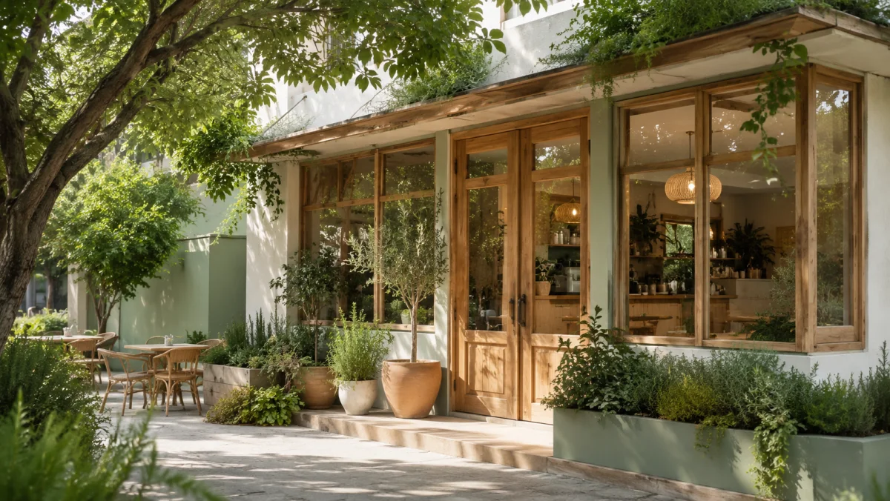
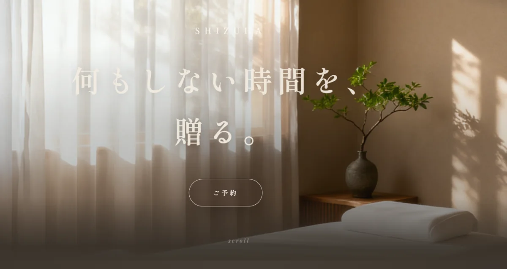

自家焙煎カフェ
aoca
自家焙煎カフェです。「落ち着き」よりも「みずみずしさ」を出したくて、やわらかい緑と素焼きの土の色を基調に、光や湯気のある写真を選びました。オープニングには小さな動きをつけて、入った瞬間から軽やかな空気が伝わるように。言葉は、肩肘張らず気さくに。

実際の制作事例と、業種別のサンプルサイトです。お店に近い例をご覧いただくと、イメージがつかみやすくなります。

こだわりの施工内容と、来店・問い合わせの導線を整理。専門店らしい世界観を伝えるサイトに仕上げました。ヒアリングから公開まで一貫して担当した、実際に公開・運用している案件です。
サイトを見る ↗実在のお店ではありませんが、「このお店だったら」と想像してつくった見本です。

自家焙煎カフェです。「落ち着き」よりも「みずみずしさ」を出したくて、やわらかい緑と素焼きの土の色を基調に、光や湯気のある写真を選びました。オープニングには小さな動きをつけて、入った瞬間から軽やかな空気が伝わるように。言葉は、肩肘張らず気さくに。

エステサロンです。施術の静けさを表現するため、色数を抑え、余白を大きくとりました。写真の枠はあえて空けています ── ここに入るのは、お店ごとの実際の施術写真。足すのは簡単でも、引くのは難しい。その引き算が、上質な落ち着きをつくると考えました。
※ 「制作サンプル」は、業種のイメージをつかんでいただくための架空サイトです。店名・価格などはすべてサンプル用の架空のものです。